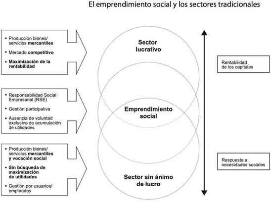

Resumen
El
emprendimiento social se cre� a base de una necesidad social
como una renovaci�n
del campo y el activismo social, coincidiendo en un debate sobre las
implicaciones de implantar o no Responsabilidad Social Corporativa (RSC). Al
permitir y promover la integraci�n de una variedad de acciones y
agentes socioecon�micos
en las empresas y la aparici�n de la teor�a
de los grupos de inter�s de Freeman. El emprendimiento social hizo
posible nuevas formas y expresiones de innovaci�n
social que dieron lugar tanto a nuevos modelos de negocios como a nuevas pr�cticas,
estrategias y filosof�as corporativas, este art�culo
pretende aproximarse a la definici�n del emprendimiento social,
describir por qu�
en sus inicios el emprendimiento social se estudiaba desde una perspectiva econ�mica
hoy en d�a
las investigaciones parten desde una perspectiva m�s
psicol�gica
y justificar su necesario estudio en el campo acad�mico.
Introducci�n
El concepto de
emprendimiento social tiene ra�ces hist�ricas profundas, aunque
su formulaci�n y
reconocimiento como un campo espec�fico de
actividad empresarial y social se ha desarrollado en las �ltimas d�cadas.
A lo
largo de la historia, ha habido individuos y organizaciones que han buscado
abordar problemas sociales y ambientales a trav�s de iniciativas
empresariales. Ejemplos tempranos incluyen a figuras como Robert Owen, fue un fabricante y reformador gal�s del siglo
XIX. Naci� el 14 de mayo de 1771 en Newtown, Montgomeryshire, Gales,
y falleci� el 17 de noviembre de 1858
en Newtown.
Fue
uno de los defensores m�s influyentes
del socialismo ut�pico a
principios del siglo XIX. Owen implement� programas de bienestar
social e industrial; promovi� ideas y
reformas sociales, incluyendo la educaci�n
obligatoria, la reducci�n de la jornada
laboral y la mejora de las condiciones de trabajo.
Tambi�n abog� por la igualdad de g�nero y la cooperaci�n entre empleadores
y empleados. En el siglo XIX estableci�
f�bricas modelo
con condiciones laborales y viviendas mejores para los trabajadores, y Muhammad
Yunus, fundador del Grameen Bank en Bangladesh, que
promovi� el microcr�dito para combatir la
pobreza.
D�cada de 1960 y 1970:
Durante este per�odo, hubo un
aumento en el inter�s por la
responsabilidad social corporativa y la idea de que las empresas deber�an contribuir
positivamente a la sociedad.
Se
establecieron t�rminos como
"inversiones sociales" y "empresas con conciencia social". A medida que la tecnolog�a avanzaba y se desarrollaban
nuevas industrias, surgieron oportunidades para emprendedores que buscaban
crear negocios con un potencial de crecimiento r�pido y a gran escala.
En
la creaci�n de la tecnolog�a con la creaci�n de empresas como
Microsoft y Apple, estas compa��as fueron
pioneras en la creaci�n de productos y
servicios innovadores que ten�an el potencial
de llegar a un mercado global y generar un crecimiento exponencial.
En la d�cada de 1970 y 1980: El concepto de emprendimiento escalable se consolid� a�n m�s con el surgimiento de
Silicon Valley en California. Esta regi�n
se convirti� en un centro de
innovaci�n y
emprendimiento, donde se crearon numerosas empresas de tecnolog�a que buscaban
desarrollar productos y servicios escalables.
Estos
emprendimientos suelen tener un enfoque global y buscan aprovechar las oportunidades
que ofrece el mercado a gran escala. Estos emprendimientos demuestran c�mo en la d�cada de 1980 fue
impulsado por la innovaci�n tecnol�gica y la capacidad de crecimiento r�pido. Estas empresas lograron
aprovechar las oportunidades emergentes en el mercado y desarrollar modelos de negocio escalables que les permitieron alcanzar un �xito significativo, que se ve reflejado en la actualidad.
A�os 90 en adelante: En Estados Unidos surge la Social Entreprise Iniciative, un programa de investigaci�n y ense�anza lanzado por Harvard Business School. A continuaci�n de esa iniciativa pionera, otras grandes universidades y
fundaciones del mismo pa�s siguieron los mismos pasos e implementaron programas de capacitaci�n y apoyo a los emprendedores sociales (Les rep�res de l�AVISE, 2007).
Por otra parte,
en Europa la noci�n de
emprendimiento social como tal emerge en el mismo per�odo en el seno de la econom�a social y de su tradici�n cooperativa y mutualista (Les rep�res de l�AVISE, 2007).
En Italia se
crea un estatuto especial de �cooperativas sociales� que se desarrolla
fuertemente con el objeto
de responder a necesidades mal satisfechas o insatisfechas
por los servicios p�blicos.
De ah�, nuevas din�micas empresariales vieron luz en otros pa�ses. Aunque diferentes en la forma y la intensidad, las experiencias de cada pa�s compartieron rasgos comunes:
o
Multiplicaci�n de las empresas sociales (entre otros sectores: inserci�n, servicios de proximidad, medioambiente, servicios sociales y comercio justo).
o
Creaci�n de nuevos estatutos y
marcos jur�dicos.
o
Emergencia
de nuevos dispositivos de creaci�n, desarrollo y
acompa�amiento de
empresas sociales.
o
Incremento
en la audiencia de estos proyectos sociales
o
Son el resultante de iniciativas privadas
lideradas por ciudadanos preocupados por defender
el inter�s colectivo, por cambiar la sociedad.
o
Son indisociables de la noci�n de innovaci�n social, bien sea a nivel
de la oferta de bien o servicios propuestos, o a nivel
de la creaci�n de valor social
y econ�mico; bien sea en el modelo econ�mico y de movilizaci�n de recursos.
o
Pertenecen plenamente a la econom�a de mercado por mucho que las utilidades no representen un fin en s�, sino un medio para lograr un objetivo social.
Propuesta de Modelo de Emprendimiento Social

La
figura anterior, muestra la interrelaci�n del
emprendimiento social con las �reas lucrativas, as�
como las no lucrativas y su relaci�n con la rentabilidad y la
respuesta a necesidades sociales.
Autor
������������������������������������ Dr.
Ra�l
Junior Sandoval G�mez